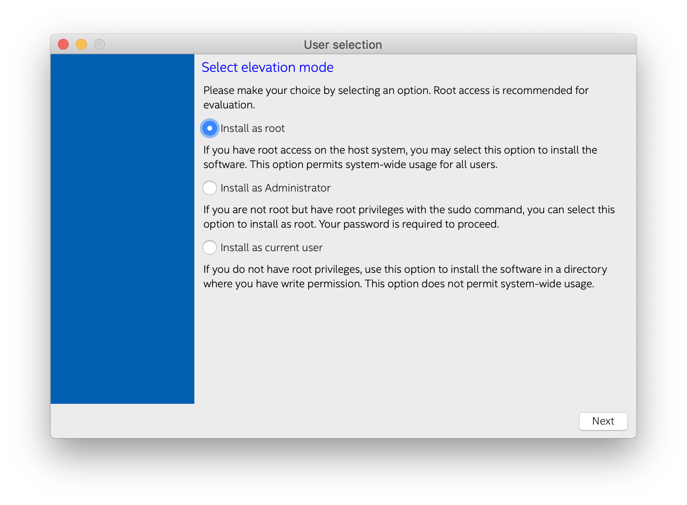
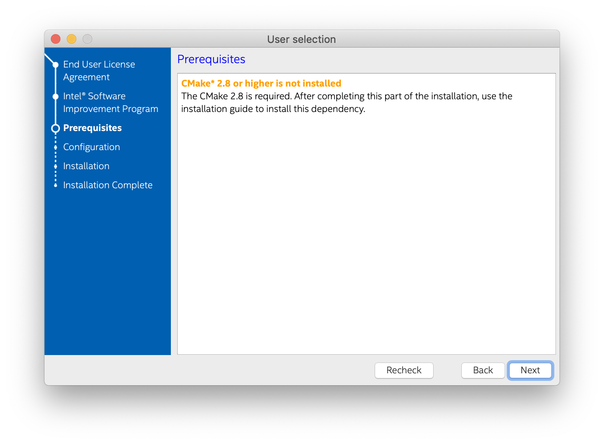
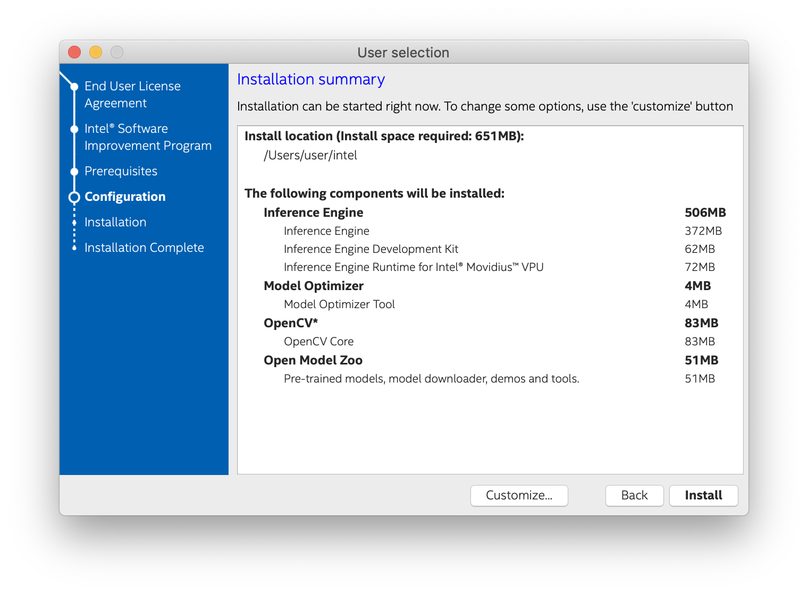
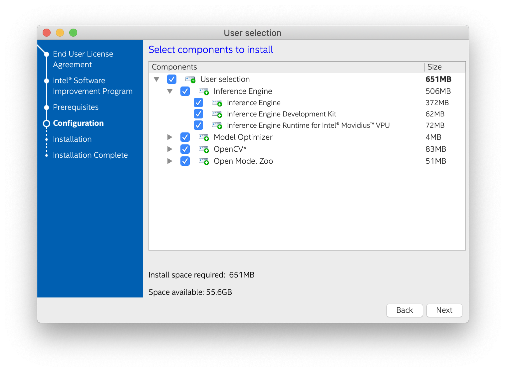
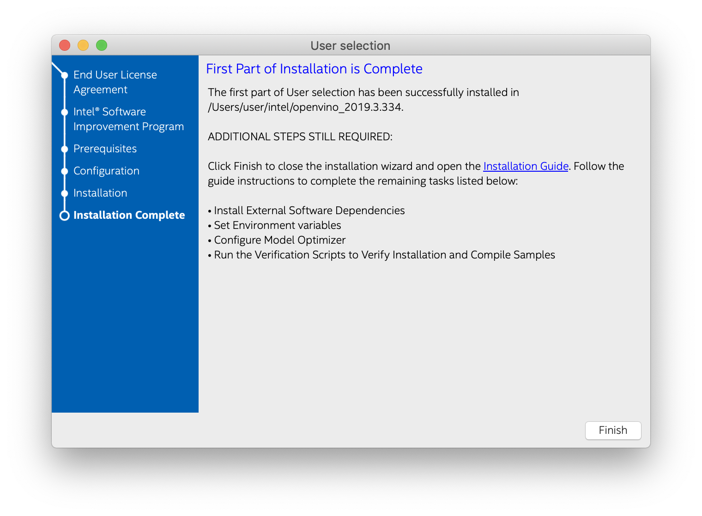

NOTES:
- The Intel® Distribution of OpenVINO™ is supported on macOS* 10.14.4 or higher versions.
- This installation has been validated on macOS 10.14.4.
- An internet connection is required to follow the steps in this guide. If you have access to the Internet through the proxy server only, please make sure that it is configured in your OS environment.
Introduction
The Intel® Distribution of OpenVINO™ toolkit quickly deploys applications and solutions that emulate human vision. Based on Convolutional Neural Networks (CNN), the toolkit extends computer vision (CV) workloads across Intel® hardware, maximizing performance.
The Intel® Distribution of OpenVINO™ toolkit for macOS* includes the Intel® Deep Learning Deployment Toolkit (Intel® DLDT) and OpenCV* to deploy applications for accelerated inference on Intel® CPUs.
The Intel® Distribution of OpenVINO™ 2019 R3 toolkit for macOS*:
- Enables CNN-based deep learning inference on the edge
- Supports heterogeneous execution across Intel® CPU and Intel® Neural Compute Stick 2 with Intel® Movidius™ VPUs
- Speeds time-to-market via an easy-to-use library of computer vision functions and pre-optimized kernels
- Includes optimized calls for computer vision standards including OpenCV*
Included with the Installation
The following components are installed by default:
| Component | Description |
|---|---|
| Model Optimizer | This tool imports, converts, and optimizes models, which were trained in popular frameworks, to a format usable by Intel tools, especially the Inference Engine. Popular frameworks include Caffe*, TensorFlow*, MXNet*, and ONNX*. |
| Inference Engine | This is the engine that runs a deep learning model. It includes a set of libraries for an easy inference integration into your applications. |
| OpenCV* | OpenCV* community version compiled for Intel® hardware |
| Sample Applications | A set of simple console applications demonstrating how to use the Inference Engine in your applications. |
| Demos | A set of console applications that demonstrate how you can use the Inference Engine in your applications to solve specific use-cases |
| Additional Tools | A set of tools to work with your models |
| Documentation for Pre-Trained Models | Documentation for the pre-trained models available in the Open Model Zoo repo |
Development and Target Platform
The development and target platforms have the same requirements, but you can select different components during the installation, based on your intended use.
Hardware
NOTE: The current version of the Intel® Distribution of OpenVINO™ toolkit for macOS* supports inference on Intel CPUs and Intel® Neural Compute Sticks 2 only.
- 6th-10th Generation Intel® Core™
- Intel® Xeon® v5 family
- Intel® Xeon® v6 family
- Intel® Neural Compute Stick 2
Software Requirements
- CMake 3.4 or higher
- Python 3.5 or higher
- Apple Xcode* Command Line Tools
- (Optional) Apple Xcode* IDE (not required for OpenVINO, but useful for development)
- (Optional) Homebrew* (required for installation of a library for Intel® Neural Compute Stick 2)
Operating Systems
- macOS* 10.14.4
Overview
This guide provides step-by-step instructions on how to install the Intel® Distribution of OpenVINO™ 2019 R1.1 toolkit for macOS*.
The following steps will be covered:
- Install the Intel® Distribution of OpenVINO™ Toolkit .
- Set the OpenVINO environment variables and (optional) Update to
.bash_profile. - Configure the Model Optimizer.
- Run verification scripts to verify installation and compile samples.
Install the Intel® Distribution of OpenVINO™ toolkit Core Components
If you have a previous version of the Intel® Distribution of OpenVINO™ toolkit installed, rename or delete these two directories:
/home/<user>/inference_engine_samples/home/<user>/openvino_models
Download the latest version of OpenVINO toolkit for macOS* then return to this guide to proceed with the installation.
Install the OpenVINO toolkit core components:
- Go to the directory in which you downloaded the Intel® Distribution of OpenVINO™ toolkit. This document assumes this is your
Downloadsdirectory. By default, the disk image file is saved asm_openvino_toolkit_p_<version>.dmg. - Double-click the
m_openvino_toolkit_p_<version>.dmgfile to mount. The disk image is mounted to/Volumes/m_openvino_toolkit_p_<version>and automatically opened in a separate window. - Run the installation wizard application
m_openvino_toolkit_p_<version>.app On the User Selection screen, choose a user account for the installation:
- Root
- Administrator
- Current user
The default installation directory path depends on the privileges you choose for the installation.
- Click Next and follow the instructions on your screen.
- If you are missing external dependencies, you will see a warning screen. Take note of any dependencies you are missing. After installing the Intel® Distribution of OpenVINO™ toolkit core components, you will need to install the missing dependencies. For example, the screen example below indicates you are missing two dependencies: 
- Click Next.
- The Installation summary screen shows you the default component set to install: 
If you used root or administrator privileges to run the installer, it installs the OpenVINO toolkit to
/opt/intel/openvino_<version>/For simplicity, a symbolic link to the latest installation is also created:
/opt/intel/openvino/If you used regular user privileges to run the installer, it installs the OpenVINO toolkit to
/home/<user>/intel/openvino_<version>/For simplicity, a symbolic link to the latest installation is also created:
/home/<user>/intel/openvino/
If needed, click Customize to change the installation directory or the components you want to install:
Click Next to save the installation options and show the Installation summary screen.
- On the Installation summary screen, press Install to begin the installation.
- When the first part of installation is complete, the final screen informs you that the core components have been installed and additional steps still required: 
- Click Finish to close the installation wizard. A new browser window opens to the next section of the Installation Guide to set the environment variables. If the installation did not indicate you must install dependencies, you can move ahead to Set the Environment Variables. If you received a message that you were missing external software dependencies, listed under Software Requirements at the top of this guide, you need to install them now before continuing on to the next section.
Set the Environment Variables
You need to update several environment variables before you can compile and run OpenVINO™ applications. Open the macOS Terminal* or a command-line interface shell you prefer and run the following script to temporarily set your environment variables:
Optional: The OpenVINO environment variables are removed when you close the shell. You can permanently set the environment variables as follows:
- Open the
.bash_profilefile in the current user home directory:vi ~/.bash_profile - Press the i key to switch to the insert mode.
- Add this line to the end of the file: source /opt/intel/openvino/bin/setupvars.sh
- Save and close the file: press the Esc key, type
:wqand press the Enter key. - To verify your change, open a new terminal. You will see
[setupvars.sh] OpenVINO environment initialized.
The environment variables are set. Continue to the next section to configure the Model Optimizer.
Configure the Model Optimizer
The Model Optimizer is a Python*-based command line tool for importing trained models from popular deep learning frameworks such as Caffe*, TensorFlow*, Apache MXNet*, ONNX* and Kaldi*.
The Model Optimizer is a key component of the OpenVINO toolkit. You cannot perform inference on your trained model without running the model through the Model Optimizer. When you run a pre-trained model through the Model Optimizer, your output is an Intermediate Representation (IR) of the network. The IR is a pair of files that describe the whole model:
.xml: Describes the network topology.bin: Contains the weights and biases binary data
The Inference Engine reads, loads, and infers the IR files, using a common API on the CPU hardware.
For more information about the Model Optimizer, see the Model Optimizer Developer Guide.
Model Optimizer Configuration Steps
You can choose to either configure the Model Optimizer for all supported frameworks at once, OR for one framework at a time. Choose the option that best suits your needs. If you see error messages, verify that you installed all dependencies listed under Software Requirements at the top of this guide.
NOTE: If you installed OpenVINO to a non-default installation directory, replace
/opt/intel/with the directory where you installed the software.
Option 1: Configure the Model Optimizer for all supported frameworks at the same time:
- Go to the Model Optimizer prerequisites directory: cd /opt/intel/openvino/deployment_tools/model_optimizer/install_prerequisites
- Run the script to configure the Model Optimizer for Caffe, TensorFlow, MXNet, Kaldi*, and ONNX: sudo ./install_prerequisites.sh
Option 2: Configure the Model Optimizer for each framework separately:
Configure individual frameworks separately ONLY if you did not select Option 1 above.
- Go to the Model Optimizer prerequisites directory: cd /opt/intel/openvino/deployment_tools/model_optimizer/install_prerequisites
- Run the script for your model framework. You can run more than one script:
- For Caffe: sudo ./install_prerequisites_caffe.sh
- For TensorFlow: sudo ./install_prerequisites_tf.sh
- For MXNet: sudo ./install_prerequisites_mxnet.sh
- For ONNX: sudo ./install_prerequisites_onnx.sh
- For Kaldi: sudo ./install_prerequisites_kaldi.sh
- For Caffe:
The Model Optimizer is configured for one or more frameworks.
You are ready to verify the installation by running the verification scripts.
Run the Verification Scripts to Verify Installation and Compile Samples
NOTES:
- The steps shown here assume you used the default installation directory to install the OpenVINO toolkit. If you installed the software to a directory other than
/opt/intel/, update the directory path with the location where you installed the toolkit.- If you installed the product as a root user, you must switch to the root mode before you continue:
sudo -i.
To verify the installation and compile two Inference Engine samples, run the verification applications provided with the product on the CPU:
Run the Image Classification Verification Script
- Go to the Inference Engine demo directory: cd /opt/intel/openvino/deployment_tools/demo
- Run the Image Classification verification script: ./demo_squeezenet_download_convert_run.sh
The Image Classification verification script downloads a public SqueezeNet Caffe* model and runs the Model Optimizer to convert the model to .bin and .xml Intermediate Representation (IR) files. The Inference Engine requires this model conversion so it can use the IR as input and achieve optimum performance on Intel hardware.
This verification script creates the directory /home/<user>/inference_engine_samples/, builds the Image Classification Sample application and runs with the model IR and car.png image located in the demo directory. When the verification script completes, you will have the label and confidence for the top-10 categories:

For a brief description of the Intermediate Representation .bin and .xml files, see Configuring the Model Optimizer.
This script is complete. Continue to the next section to run the Inference Pipeline verification script.
Run the Inference Pipeline Verification Script
- While still in
/opt/intel/openvino/deployment_tools/demo/, run the Inference Pipeline verification script:This verification script downloads three pre-trained model IRs, builds the Security Barrier Camera Demo application and runs it with the downloaded models and the./demo_security_barrier_camera.shcar_1.bmpimage from thedemodirectory to show an inference pipeline. The verification script uses vehicle recognition in which vehicle attributes build on each other to narrow in on a specific attribute.
First, an object is identified as a vehicle. This identification is used as input to the next model, which identifies specific vehicle attributes, including the license plate. Finally, the attributes identified as the license plate are used as input to the third model, which recognizes specific characters in the license plate.
When the verification script completes, you will see an image that displays the resulting frame with detections rendered as bounding boxes, and text:
- Close the image viewer screen to end the demo.
Congratulations, you have completed the Intel® Distribution of OpenVINO™ 2019 R1.1 installation for macOS. To learn more about what you can do with the Intel® Distribution of OpenVINO™ toolkit, see the additional resources provided below.
Steps for Intel® Neural Compute Stick 2
These steps are only required if you want to perform inference on Intel® Neural Compute Stick 2 powered by the Intel® Movidius™ Myriad™ X VPU. See also the Get Started page for Intel® Neural Compute Stick 2.
To perform inference on Intel® Neural Compute Stick 2, install the libusb library by running the following command in the Homebrew* command manager:
NOTE: If you do not have Homebrew on your machine, install it by running the following command:
/usr/bin/ruby -e "$(curl -fsSL https://raw.githubusercontent.com/Homebrew/install/master/install)"For details, refer to the Homebrew documentation.
Hello World Tutorials
Visit the Intel Distribution of OpenVINO Toolkit Inference Tutorials for Face Detection and Car Detection Exercises
Additional Resources
- To learn more about the verification applications, see
README.txtin/opt/intel/openvino/deployment_tools/demo/. - For detailed description of the pre-trained models, go to the Overview of OpenVINO toolkit Pre-Trained Models page.
- More information on sample applications.
- Convert Your Caffe* Model
- Convert Your TensorFlow* Model
- Convert Your MXNet* Model
- Convert Your ONNX* Model
- Intel Distribution of OpenVINO Toolkit home page
- Intel Distribution of OpenVINO Toolkit documentation